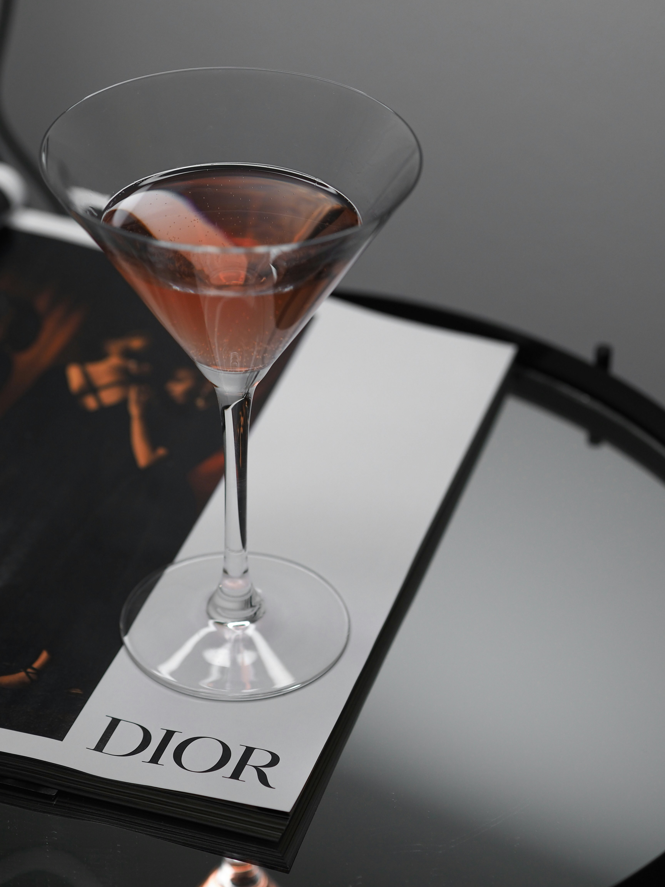

New York City is full of must-visit spots for fashion lovers, from high-end designer stores to trendy hidden gems. Fifth Avenue is home to some of the biggest luxury brands, while Soho and the Lower East Side offer unique boutiques, if you’re looking for vintage finds, neighborhoods like Williamsburg and the East Village have some of the best thrift stores in the country.
Best Spots
